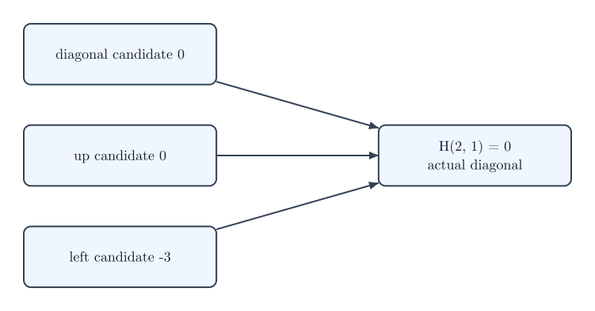
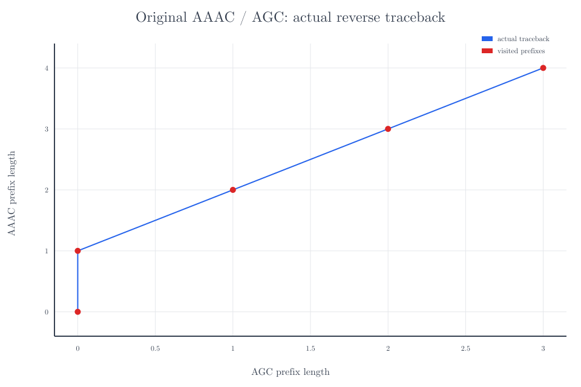
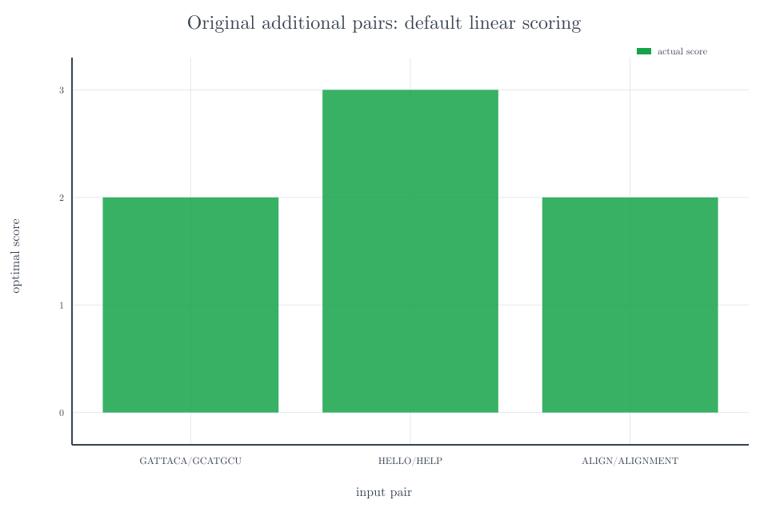
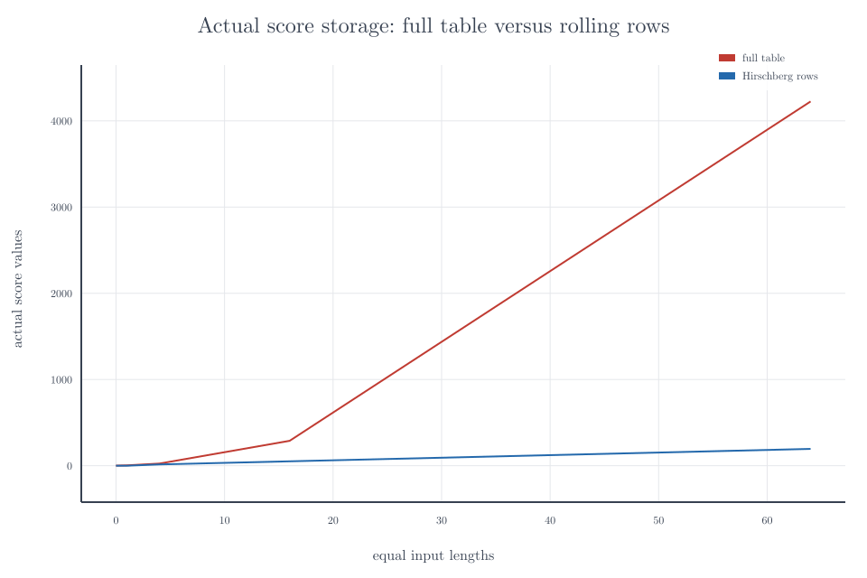

Needleman–Wunsch global alignment
Abstract
Find a highest-scoring end-to-end alignment of two byte sequences under linear match, mismatch and gap scores. We inspect the actual native score table and traceback, retain the original AAAC/AGC example and three additional sequence pairs, and compare full-table storage with the existing linear-space Hirschberg implementation.
Prefix optimality and fully penalized ends
Let H(i,j) be the best score aligning the first i bytes of A with the first j bytes of B. The last column either consumes both bytes, only A, or only B. Those exhaustive alternatives give H(i,j)=max(H(i−1,j−1)+pair,H(i−1,j)+gap,H(i,j−1)+gap). Borders are H(i,0)=i·gap and H(0,j)=j·gap: terminal gaps are charged, unlike a local or free-end alignment. Induction on i+j proves the optimum. The returned traceback prefers diagonal, then up, then left whenever scores tie; it selects one optimum, not every optimal alignment.
A tied cell in a tiny actual run
For AA versus A with scores1,−1,−1, the final diagonal and up candidates both score zero. The native producer records its diagonal-first choice. The diagram below reads its actual candidates; no second recurrence is implemented in the report.
#include <dm/dm.hpp>
int main() {
std::filesystem::create_directories("build");
auto t = dm::algorithms::needleman_wunsch_trace("AA", "A", {1, -1, -1});
auto c = t.cells.back();
dm::graphics::Diagram d;
d.node("diag", {0, 2}, std::format("diagonal candidate {}", c.diagonal));
d.node("up", {0, 0}, std::format("up candidate {}", c.up));
d.node("left", {0, -2}, std::format("left candidate {}", c.left));
d.node("chosen", {7, 0},
std::format("H({}, {}) = {}\nactual {}", c.i, c.j, c.score,
dm::algorithms::needleman_wunsch_move_name(c.chosen)));
for (auto id : {"diag", "up", "left"})
d.edge(id, "chosen");
std::print("Actual aligned rows: `{}` / `{}`, score {}.\n",
t.run.alignment.a_aligned, t.run.alignment.b_aligned,
t.run.alignment.score);
d.save_svg("build/nw_tiny.svg");
}Actual aligned rows: AA / -A, score 0.

Retain the original AAAC versus AGC experiment
The original scoring is match1, mismatch−1 and gap−1. The native optimum is zero, with aligned rows AAAC and -AGC under the stated tie policy. Every displayed number below comes from the actual canonical table, including both boundary prefixes. The plotted path follows the actual reverse traceback from bottom right to origin; its axes are prefix lengths rather than a geographic distance.
#include <dm/dm.hpp>
int main() {
std::filesystem::create_directories("build");
auto t = dm::algorithms::needleman_wunsch_trace("AAAC", "AGC", {1, -1, -1});
std::print("| A prefix length | empty B | A | AG | AGC |\n| ---: | ---: | ---: | ---: | ---: |\n");
for (std::size_t i = 0; i < t.run.scores.size(); ++i) {
std::print("| {} |", i);
for (auto v : t.run.scores[i])
std::print(" {} |", v);
std::print("\n");
}
std::vector<double> x{double(t.b.size())}, y{double(t.a.size())};
for (auto &s : t.traceback) {
x.push_back(s.j_after);
y.push_back(s.i_after);
}
auto p = dm::graphics::RPlot::plot(x, y, "l", "actual traceback");
p.points(x, y, "visited prefixes", {220, 38, 38}, 5).title(
"Original AAAC / AGC: actual reverse traceback").x_label(
"AGC prefix length").y_label("AAAC prefix length").save_svg(
"build/nw_original.svg");
std::print("\nActual score {}, rows `{}` / `{}`; {} allocated cells, {} actual recurrence cells, {} " "traceback columns.\n",
t.run.alignment.score, t.run.alignment.a_aligned,
t.run.alignment.b_aligned, t.run.cells, t.run.interior_cells,
t.run.traceback_steps);
}| A prefix length | empty B | A | AG | AGC |
|---|---|---|---|---|
| 0 | 0 | -1 | -2 | -3 |
| 1 | -1 | 1 | 0 | -1 |
| 2 | -2 | 0 | 0 | -1 |
| 3 | -3 | -1 | -1 | -1 |
| 4 | -4 | -2 | -2 | 0 |
Actual score 0, rows AAAC / -AGC; 20 allocated cells, 12 actual recurrence cells, 4 traceback columns.

The original three additional sequence pairs
The default scoring is2,−1,−2, which differs from the original tiny example. GATTACA/GCATGCU, HELLO/HELP and ALIGN/ALIGNMENT are preserved with that default. Scores compare these specified alignments under one scoring rule; they are not calibrated biological probabilities, and comparing different sequence lengths as a similarity ranking would need a separate model.
#include <dm/dm.hpp>
int main() {
std::filesystem::create_directories("build");
std::vector<std::string> labels;
std::vector<double> scores;
std::print("| first input | second input | actual score | aligned first | aligned second |\n| --- | --- " "| ---: | --- | --- |\n");
for (auto & [a, b] : dm::algorithms::needleman_wunsch_demo_pairs()) {
auto r = dm::algorithms::needleman_wunsch(a, b);
labels.push_back(a + "/" + b);
scores.push_back(r.score);
std::print("| {} | {} | {} | `{}` | `{}` |\n", a, b, r.score,
r.a_aligned, r.b_aligned);
}
auto p = dm::graphics::RPlot::barplot(scores, labels, "actual score");
p.title("Original additional pairs: default linear scoring").x_label(
"input pair").y_label("optimal score").save_svg("build/nw_pairs.svg");
}| first input | second input | actual score | aligned first | aligned second |
|---|---|---|---|---|
| GATTACA | GCATGCU | 2 | GATTACA | GCATGCU |
| HELLO | HELP | 3 | HELLO | HE-LP |
| ALIGN | ALIGNMENT | 2 | ALIG---N- | ALIGNMENT |

Storage, empty inputs and scoring controls
The full algorithm allocates (n+1)(m+1) score values and evaluates nm interior recurrences, then emits at most n+m alignment columns. It therefore uses O((n+1)(m+1)) work and table storage. The optional complete cell limit defaults to1000000 and includes the boundary row and column. Ordinary needleman_wunsch disables optional policies. The owned trace additionally counts3 scoring scalars, n+m input bytes, n+1 row records, all score values, nm fill records and three units per emitted column. A zero policy disables its limit; an insufficient limit throws rather than returning a truncated history.
Hirschberg instead recomputes rolling rows and splits. Its recorded peak_score_slots measures simultaneously live score-vector elements, excluding outputs and recursion frames; this is compared with full-table values rather than claiming total resident bytes. Scores must agree, although tied aligned rows can differ with split orientation. Empty inputs produce penalized gaps. Positive gap rewards are accepted and can make opposing inserted gaps optimal, demonstrating why the scoring model matters.
#include <dm/dm.hpp>
int main() {
std::filesystem::create_directories("build");
std::vector<double> x, full, rolling;
std::print("| repeated input length | full score slots | Hirschberg peak score slots | scores agree " "|\n| ---: | ---: | ---: | --- |\n");
for (int n : {0, 1, 4, 16, 64}) {
std::string a(n, 'A'), b(n, 'A');
auto r = dm::algorithms::needleman_wunsch_run(a, b);
auto h = dm::algorithms::hirschberg_run(a, b);
x.push_back(n);
full.push_back(r.cells);
rolling.push_back(h.work.peak_score_slots);
std::print("| {} | {} | {} | {} |\n", n, r.cells,
h.work.peak_score_slots,
r.alignment.score == h.alignment.score);
}
auto p =
dm::graphics::RPlot::plot(x, full, "l", "full table", {192, 59, 50});
p.lines(x, rolling, "Hirschberg rows", {36, 105, 172}).title(
"Actual score storage: full table versus rolling rows").x_label(
"equal input lengths").y_label("actual score values").save_svg(
"build/nw_storage.svg");
auto r = dm::algorithms::needleman_wunsch("A", "A", {1, -1, 2});
std::print("\nPositive-gap control: `{}` / `{}`, score {}.\n", r.a_aligned,
r.b_aligned, r.score);
}| repeated input length | full score slots | Hirschberg peak score slots | scores agree |
|---|---|---|---|
| 0 | 1 | 0 | true |
| 1 | 4 | 0 | true |
| 4 | 25 | 15 | true |
| 16 | 289 | 51 | true |
| 64 | 4225 | 195 | true |
Positive-gap control: -A / A-, score 4.

Admission and interpretation
Both complete byte strings are validated before policies or table allocation. Literal hyphens are reserved for inserted gaps, while empty, NUL and high-byte inputs are accepted. This is byte alignment, with no Unicode normalization or affine-gap state. A conservative guard requires (n+m)·max(abs(scoring))≤INT_MAX before any signed score arithmetic; unrepresentable input, table and output geometry also fails explicitly. These guards correct the unchecked indexing and integer arithmetic hazards in the old implementation.
Needleman and Wunsch (1970), A general method applicable to the search for similarities in the amino acid sequence of two proteins establishes the dynamic-programming global-alignment method. The native Hirschberg report discusses the rolling-row alternative; the comparison here uses its recorded storage rather than a report-side simulator.
Verification
This ten-report batch passes76 CTest cases,22 directly instrumented ASan/UBSan
cases,119 compiled and executed public examples,513/513 scoped documentation
definitions and ten representative clangd hovers. Independent Python Fraction
arithmetic and likelihood/mass reconstruction verify5266 captured records
with43990 checks, including the original Gaussian controls. Frozen valid-input
comparisons cover DFA quotients, byte recoding, event streams, interpolation,
tours, alignments, real-root paths, packing and nested-sampling trajectories.
Ten checkout headers and ten byte-identical installed development headers
compile independently; an installed-header native consumer links and runs. The
batch has42 executed complete programs and42 visually reviewed native figures,
with HTML/Markdown result and image-byte checks. These are scoped native checks,
not an installation claim for every language binding. Receipts:
build/mepml-conversion/batch-244-253/.